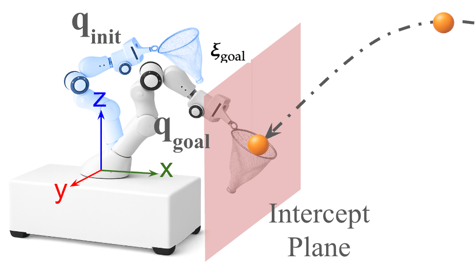
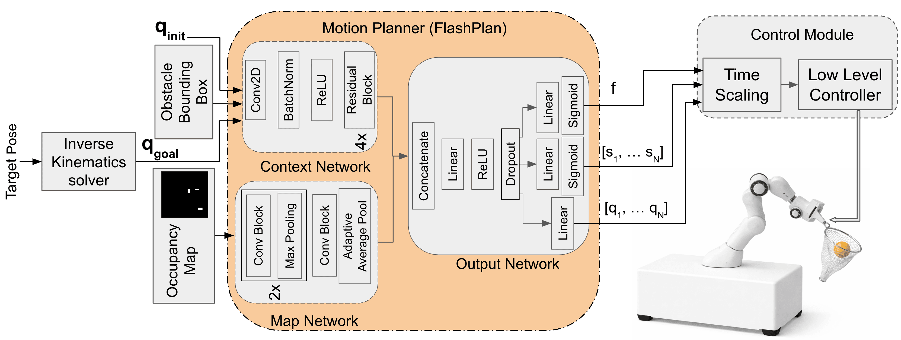
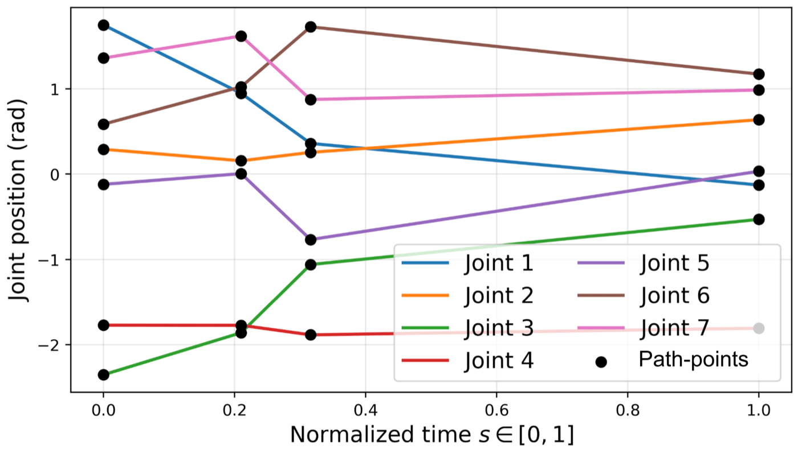
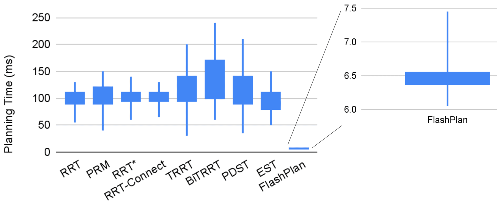
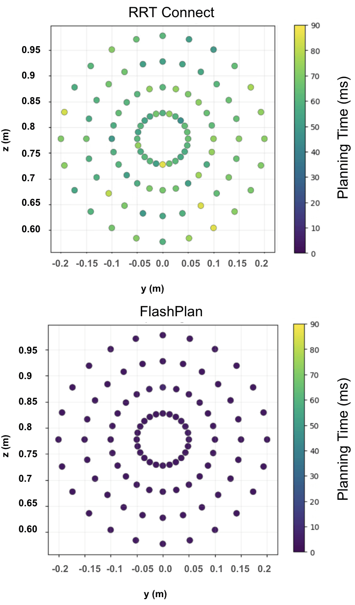
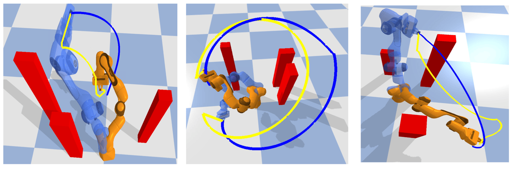
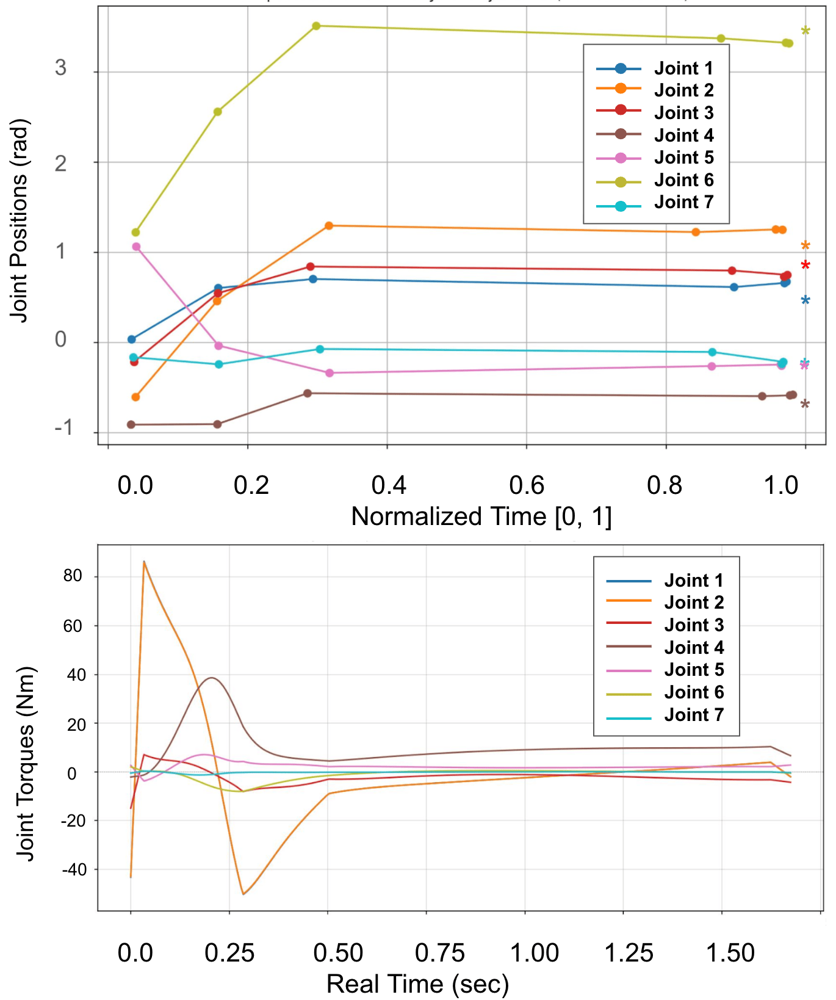
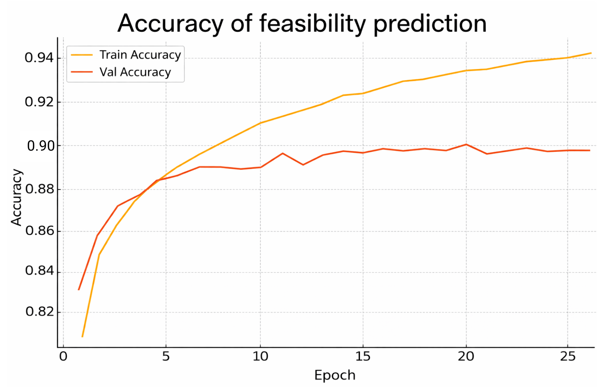
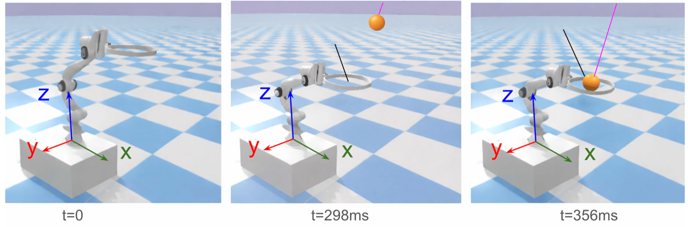

Time-critical robotic tasks such as ball catching require fast motion planning, as planning delays directly reduce the available control window prior to ball interception. Classical sampling-based motion planners can generate collision-free trajectories, but often exhibit high and variable planning latency, limiting their suitability for athletic robotic applications. This paper presents FlashPlan, a neural motion planner designed for time-sensitive robotic tasks. FlashPlan directly predicts compact, collision-free, time-normalized joint-space trajectories in a single forward pass, enabling low and consistent planning latency. To ensure dynamic feasibility, we introduce a torque-constrained time-scaling method that computes the fastest control duration for the predicted trajectory while respecting joint torque limits. Extensive benchmarking against classical planners demonstrates significantly reduced and more consistent planning latency. Experiments further show that the increased available control window translates to improved ball-catching success rates. These results highlight the importance of latency-consistent motion planning for dynamic and athletic robotic manipulation tasks.
We consider a ball-catching problem with a Franka Emika Panda, a 7-DoF robotic manipulator. Given a predicted ball trajectory, an interception point and end-effector orientation are computed on a predefined interception plane, aligned so its surface normal coincides with the incoming ball’s velocity for maximal capture area. Inverse kinematics maps this Cartesian goal to a joint-space goal configuration qgoal. The planner must move the robot from its current configuration qinit to qgoal collision-free and in minimal, consistent time — leaving as much of the available window as possible for physical actuation and low-level control before the ball arrives.

In contrast to prior learning-based planners that guide or warm-start iterative search, FlashPlan eliminates search entirely and formulates motion generation as a feedforward prediction problem. Given the current joint configuration, the goal configuration, and an environment representation, FlashPlan directly predicts a compact, collision-free, time-normalized joint-space trajectory in a single forward pass — low and consistent latency, independent of obstacle complexity. A torque-constrained time-scaling stage then computes the fastest execution time for that trajectory that keeps every joint within its torque limits, and a torque-based low-level controller tracks the resulting time-scaled trajectory.

FlashPlan outputs a compact, time-normalized joint-space trajectory represented by a small, fixed number of path-points {(si, qi)}, where si ∈ [0, 1] is a normalized time and qi ∈ R7 a joint configuration; a continuous trajectory is reconstructed by interpolating between them. Decoupling motion generation from absolute execution time this way lets the same predicted geometry be scaled to whatever duration is dynamically feasible. Training labels come from RRTConnect expert demonstrations, compressed to a handful of path-points with the Ramer–Douglas–Peucker algorithm.

Similar to prior learning-based planners such as MPNet, FlashPlan also includes a binary feasibility head that predicts whether a collision-free path exists between qinit and qgoal given the environment — approximating the classical feasibility query in constant time.
FlashPlan separately encodes a structured context representation (initial and goal joint configurations plus obstacle center/bounding-box descriptions, as a fixed-size 2D tensor) and a 2D top-down occupancy grid of the workspace. A context network (a convolutional stem followed by residual blocks) and a map network (convolutional blocks interleaved with downsampling, followed by adaptive average pooling) each produce a fixed-dimensional embedding; the two are concatenated and passed to a shared output network — an MLP backbone with three heads predicting (i) a feasibility score, (ii) normalized path-point times {si}, and (iii) the corresponding joint configurations {qi}.
FlashPlan is trained entirely offline on 10,000 samples generated by treating RRTConnect as an expert in randomized cluttered environments (80/10/10 train/val/test split), with a weighted multi-task loss over feasibility, path-point timing, joint-space accuracy, goal-reaching, and velocity smoothness.
Because the predicted trajectory is time-normalized, an execution duration T must be chosen before it can be tracked. Joint velocities scale as 1/T and accelerations as 1/T2, so the peak fraction of each joint’s torque limit used along the trajectory, Φ(T), decreases monotonically as T increases. FlashPlan exploits this monotonicity to binary-search for the fastest torque-feasible execution time, T* = min{T : Φ(T) ≤ 1}, with negligible runtime overhead — maximizing the control window left before the ball arrives while guaranteeing the motion stays within the manipulator’s dynamic limits.
Evaluated in a PyBullet simulation of the Franka Emika Panda, on an Intel Xeon Gold 6226R CPU (matching the CPU-based classical baselines for a fair comparison).
Across identical planning queries in randomized obstacle environments, classical planners (RRT, PRM, RRT*, RRT-Connect, TRRT, BiTRRT, PDST, EST) show median planning times of roughly 90–160 ms with substantial variance. FlashPlan achieves a median of ~6.5 ms with very low variance — a 15–25× reduction in typical latency.

Latency consistency also holds spatially: sampling a dense set of intercept locations on the interception plane for a fixed qinit, RRT-Connect’s planning time fluctuates strongly with intercept geometry, while FlashPlan’s single forward pass keeps latency uniformly low everywhere in the workspace — a property that matters directly for time-critical interception, where a spatially variable planning time means an unpredictable control budget.

Under identical obstacle configurations, FlashPlan produces trajectories geometrically comparable to RRT-Connect’s, indicating the learned model captures feasible motion patterns in cluttered scenes — without any iterative sampling or tree expansion.

The predicted joint trajectories evolve smoothly and converge closely to the goal configuration at s = 1 (asterisks), and the resulting torque-scaled trajectory respects each joint’s torque limit throughout execution. The feasibility head separately reaches 89.2% test accuracy at predicting whether a collision-free path exists at all, generalizing well to unseen obstacle configurations.


Balls were thrown from 4 meters, with all methods sharing the same IK solver, torque-constrained time-scaling procedure, and low-level controller — differing only in the motion planner. The control window tcontrol = tarr − tplan is the time left for the controller before ball arrival.
| Motion Planner | Success Rate | Avg. Control Window | vx,75 | vx,50 |
|---|---|---|---|---|
| EST | 82.8% | 221.6 ms | 6.77 m/s | 7.25 m/s |
| RRT-Connect | 87.35% | 237.2 ms | 6.90 m/s | 7.48 m/s |
| FlashPlan | 95.2% | 330.6 ms | 8.51 m/s | 8.86 m/s |
FlashPlan achieves the highest catch success rate while providing a substantially larger control window, which directly translates into sustaining successful catches at higher ball approach speeds (vx,75/vx,50: the fastest approach speed at which the planner still catches at least 75%/50% of the time).

FlashPlan is trained offline on trajectories from a classical planner (RRTConnect) and therefore inherits that expert’s structural biases. Transferring the method to a different robot requires retraining due to differences in physical dimensions. And while torque-constrained time scaling guarantees dynamic feasibility of the planned motion, real tracking performance still depends on the low-level controller and hardware limitations. The present study also assumes the interception pose is estimated upstream; closing the loop with direct high-speed visual perception is left to future work.
FlashPlan reframes time-critical motion planning as single-pass feedforward prediction rather than iterative search, yielding planning latency that is both an order of magnitude lower and far more consistent than classical sampling-based planners — independent of obstacle complexity or intercept geometry. Paired with a torque-constrained time-scaling stage that computes the fastest dynamically feasible execution time via efficient binary search, this consistently larger control window directly translates into higher ball-catching success rates and a wider feasible interception-speed envelope, underscoring that for dynamic, athletic manipulation, latency consistency is not merely a computational nicety but a physical requirement.
The paper is currently under review at ICRA 2027. If you’d like to reference it in the meantime:
@misc{chowdhury2026flashplan,
title = {FlashPlan: A Fast Neural Motion Planner for Robotic Ball
Catching},
author = {Chowdhury, Sakib and Guo, Yi},
note = {Submitted to ICRA 2027},
year = {2026}
}